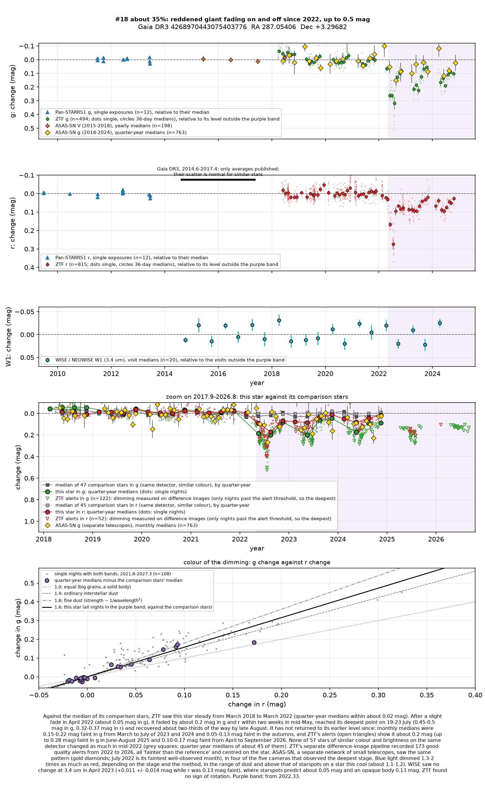
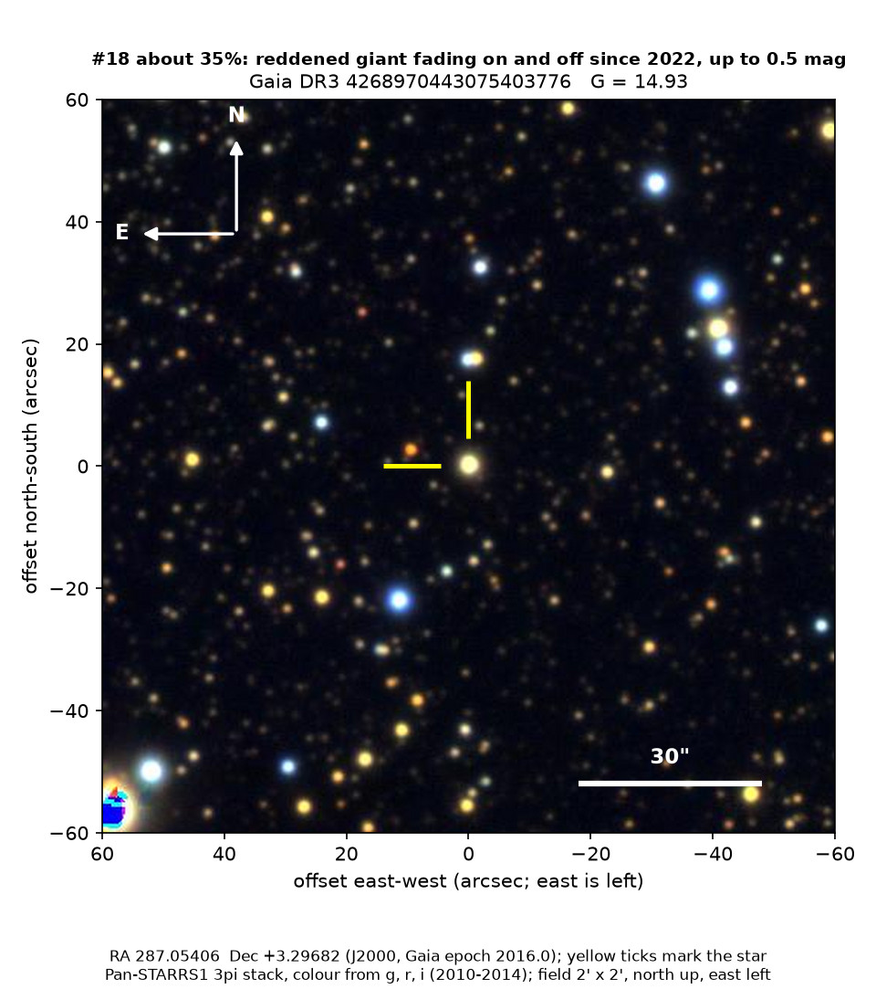
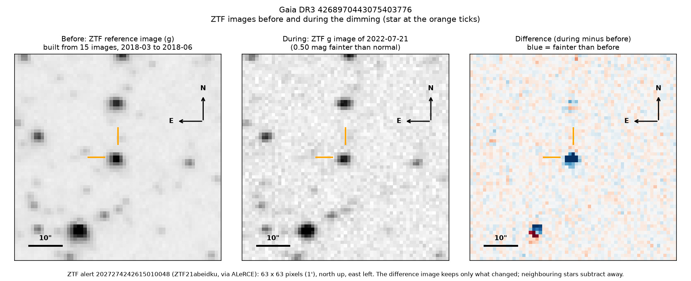
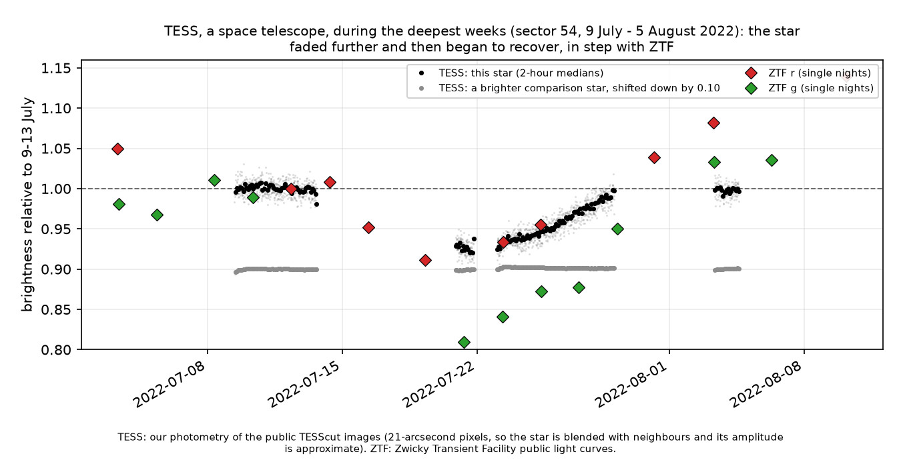

Professor of Mathematics
Paata Ivanisvili
Department of Mathematics, University of California, Irvine

Candidate 18: a reddened giant that has been fading on and off since 2022
Why this estimate. The dimming is certain: ZTF, a survey telescope at Palomar Observatory in California, recorded it while none of 57 similar stars on the same detector changed as much, and ASAS-SN, a worldwide network of small telescopes, and NASA’s TESS space telescope saw it too. Its colour and the unchanged infrared light point to dust. The estimate is not higher because there is no spectrum, the star’s distance is uncertain, the field is crowded, the latest dimmings rest on ZTF’s alerts alone, and at its low end the colour approaches that of starspots.
How to read the pictures. The finder chart shows a patch of sky two arcminutes across, about a fifteenth of the Moon’s width, with north up and east to the left. The star sits between the two yellow ticks, and the white bar is 30 arcseconds long. On a light curve the vertical axis is magnitude, a brightness scale on which larger numbers mean fainter stars, and it is drawn so that down means fainter. Purple shading marks the dimming. Each survey uses slightly different filters, so each is compared with its own normal level. The ZTF pictures show ZTF’s reference image of the star, an image taken during the dimming, and the difference between the two, in which only what changed remains: blue means fainter and red brighter. The TESS light curve covers the deepest weeks of the dimming, together with ZTF’s measurements of the same days.

What changed. The star is a giant in Aquila, 10 to 16 times the Sun’s size and reddened by thick Milky Way dust. ZTF found it steady from March 2018 to March 2022. In mid-May 2022 it faded by about 0.2 magnitudes within two weeks, and on 19 to 23 July it was 0.45 to 0.51 magnitudes faint in green light and 0.32 to 0.37 in red: it had lost more than a third of its green light.
It recovered about two-thirds of the way by late August, but has dimmed again in every season since, most deeply between April and July, and in September 2026 it was still 10 to 15 per cent faint. ZTF’s alert system has flagged it as fainter 173 times since April 2022, ASAS-SN’s ten faintest well-observed months since 2018 all fall in 2022 to 2024, and in late July 2022 TESS saw the star fade further and then begin to recover, in step with ZTF.
Why it might matter. Dust passing in front of the star is the likeliest cause. Green light dimmed 1.3 to 2 times as much as red, more than starspots on so cool a star would give (about 1.1 to 1.2), and two NEOWISE visits during the dimming saw no infrared change, which rules out an opaque body. Spectra from Gaia, the European Space Agency’s star-mapping satellite, show an ordinary giant of about 5,000 K, too hot for the red giants that pulsate this much, and it lacks the warm dust of a young star. An eclipse by a companion star would be brief and repeat exactly. Dimmings repeated over more than four years suggest a large, uneven structure of dust, perhaps a disc around an unseen companion, as in epsilon Aurigae. A spectrum would settle what kind of star it is.
No record of the dimming could be found. SIMBAD and VSX, the variable-star index, list nothing at the star’s position, Gaia gives it no variability entry, and it is in no variable-star catalogue checked, nor among the 81 dimming stars of Tzanidakis et al. (2025). There is no transient report, Gaia alert or paper naming it. ALeRCE, which holds ZTF’s alerts, has only machine-generated labels for it, such as “long-period variable”, which describe the light curve’s shape, not the kind of star.
- Star
- Gaia DR3 4268970443075403776, a reddened G-type giant
- Location
- RA 287.05406°, Dec +3.29682° (J2000), in Aquila, 2.2 degrees south of the Milky Way’s mid-plane
- Distance
- about 2,200 to 3,700 parsecs (7,000 to 12,000 light-years)
- Brightness
- Gaia G = 14.93, far too faint for the eye
- Probability
- This candidate is unconfirmed. The percentage under the title is an estimate of the chance that it is a real, previously unrecorded case of the kind described. The estimate has not been checked by outside experts. See the introduction to all thirty-two candidates.
- Caveat
- There is no spectrum, and Gaia’s models disagree with its parallax on the star’s distance and size. The colour rests on ZTF alone, and the infrared test on two visits. Since 2025 only ZTF’s alerts follow the star, and they cannot show whether it recovered between them. ASAS-SN and TESS blend it with its neighbours.


